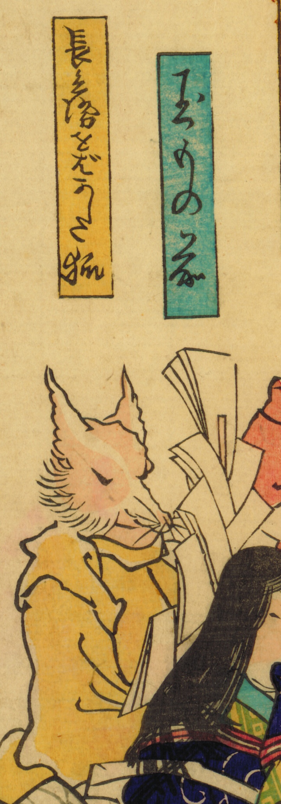

長兵衛をばかした狐；チョウベエヲバカシタキツネ，狐；キツネ

御幣を持つ狐。
著作者：不明／出典：親書誌：U426_nichibunken_0470：狂画こん會；キョウガコンカイ／日付：2025／資源識別子：U426_nichibunken_0470_0002_0000
Copyright (c)2010- International Research Center for Japanese Studies, Kyoto, Japan. All rights reserved.